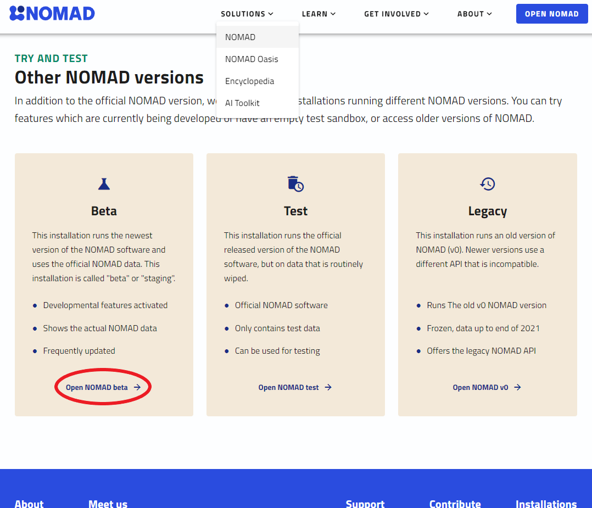
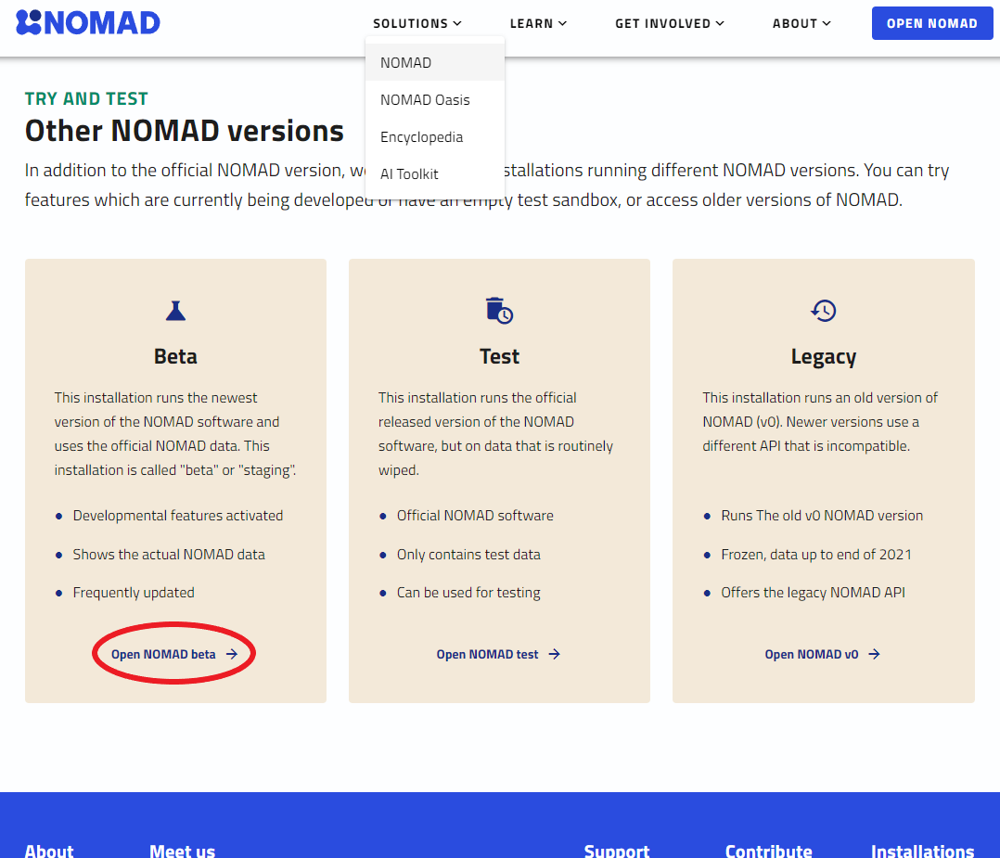

Part I: How to explore the NOMAD Archive and Repository.
This part contains the information on how to explore the NOMAD Archive and Repository (in short, NOMAD-lab) in order to find electronic-structure calculations data. A more general tutorial can be found in the FAIRmat tutorial 1 and the materials therein.
Exploring NOMAD
Go to the NOMAD-lab website.
There are two main versions when exploring NOMAD-lab: the stable version (by clicking the "Open NOMAD" button) and the Beta or staging version. As the current NOMAD infrastructure is constantly being updated, we recommend you to go to the Beta version. The link can be also found when scrolling down in the main landing page of NOMAD-lab or when clicking on the top menu "Solutions > NOMAD" and scrolling down.
  NOMAD.">
 NOMAD.">
The landing NOMAD Entries page is a very intuitive and easy-to-use Graphical User Interface (GUI). Here you can explore data according to your preferences by clicking on the filter menus on the left. You can then select a variety of quantities that characterize the Material or system under study, the methodology parameters followed in the calculation or experiment, and the output properties.
There is a large variety of options to filter data in NOMAD. In this tutorial, you will learn about data for electronic-structure calculations, i.e., data obtained when solving Density Functional Theory (DFT), GW approximation, Bethe-Salpeter equation (BSE), projected tight-binding models (Projection), and Dynamical Mean-Field Theory (DMFT), as well as in the Properties menu called "Electronic". All of these menus contain (meta)information important for these calculations. If you feel some important quantity is missing, or maybe you want to extend to other electronic-structure techniques, please contact us!
Going beyond the GUI: the NOMAD metainfo and querying data
The most important aspect of NOMAD is the metainfo definitions. The whole set of NOMAD metainfo definitions can be found in the top-left menu "Analyze > The NOMAD Metainfo". As you can see, not all the quantities and sections appear in the GUI exploration menus, but rather a selected group. In Part II, you will learn how to explore this metainfo for a specific entry.
Another important functionality in NOMAD is being able to perform queries and analyze the resulting downloaded data from it. Once you have decided searching for a set of materials with certain properties and derived from your prefered methodology, NOMAD gives you another tool to perform a query via Application Programming Interface (API) queries or calls. This can be found by clicking the symbol <> at the top of the filter menus. In Part II, you will learn how to use an API query to get GW data and work with it in a Jupyter Notebook for analysis and plotting of the DFT and GW band structure.